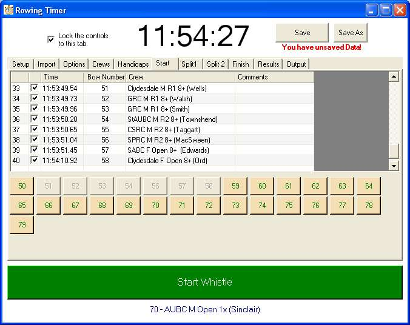

The Race is ON!
As crews pass a timing point, the relevant "whistle button" is clicked.
The Whistle buttons are located bottom of the form.
One of the main challenges of writing this program is to ensure that these buttons are always available.
That is why the use of dialog boxes (error messages etc..) is kept to a minimum. They always demand an user reponse, and prevent the
whistle buttons from getting the focus.
So that's the background. You are always ready to click these buttons precisely.
If you click in error.... uncheck the box next to the time column and the row is disabled. See example below.
So that's the times recorded - but obviously that isn't enough. The times you get need to be linked to a list showing
the order in which the crews pass the timing point.
This list is the bownumber column (see below).
You can enter this order before or after you press the "whistle button".
The ways of entering this list of bownumbers is either
- Click the crew buttons in order
- Type into the datacolumn cells
- "Drag" the buttons into the relevant row (this will displace any Bownumber already there).
One more thing.
You will notice the checkbox in the top left corner of the screen. When checked this locks the tabpage control to the
current tab, and removes all but the relevant whistle button, which is then enlarged considerably.
If you are using a PC to record just one set of timing points, I would suggest you check this.
